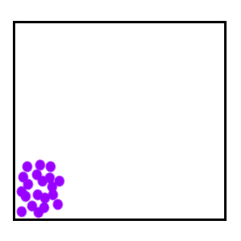
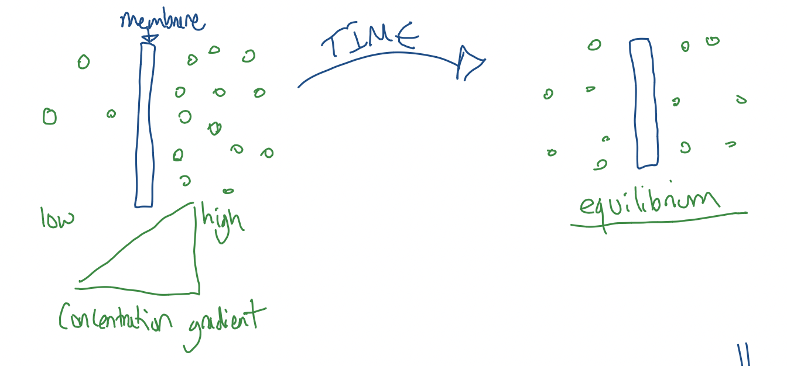
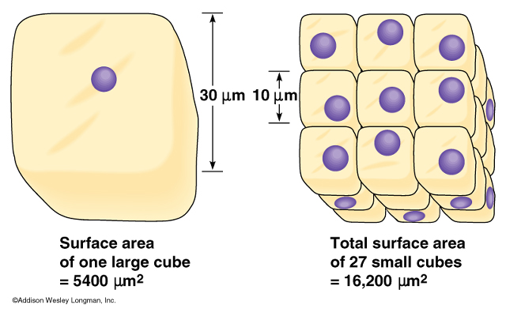
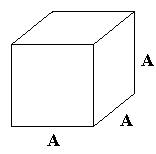

Instructions: Work through the sections below independently. Read the text, watch the video, and complete all the interactive activities.
Small molecules can cross the cell membrane. If there is a difference in concentrations, diffusion will occur.

It's a passive process - it requires no energy (ATP) from the cell to occur.
Diffusion is finished once equilibrium has been achieved (the molecules are evenly spread out).

There are four factors that can change the rate of diffusion:
Watch this short video to learn more about the factors that affect diffusion.
Note: The creator of this specific video has restricted it from playing directly inside other websites. Please click the button below to watch it safely on YouTube.
Watch "What is Diffusion?" on YouTubeTest your understanding of the reading and video by typing the correct words into the blanks.
Answer the following questions to check your understanding of diffusion so far.
A cell needs substances such as oxygen and glucose to enter so that chemical reactions can take place in the cytoplasm. These reactions are part of the cell's metabolism and require a constant supply of substances.
The surface area of a cell is important because the surface is made up of the cell membrane, where substances can diffuse into and out of the cell. A larger surface area means there is more membrane available for diffusion.
The volume of a cell is important because the cytoplasm contains the machinery and substances needed for metabolic reactions. As cell volume increases, there is more cytoplasm and therefore a greater demand for substances such as oxygen and glucose.
Therefore, a cell needs a large surface area compared with its volume. This means there is enough cell membrane available for substances to enter by diffusion to meet the demands of the metabolic reactions taking place inside the cell.
If a cell becomes too large, its volume increases faster than its surface area. There is then relatively less membrane available for each unit of cytoplasm. Substances cannot enter quickly enough to meet the cell's metabolic demands, and waste products may also take too long to leave.
Surface area to volume ratio is NOT a measure of how big something is. It tells us how much surface is available compared with how much is inside.
Which has better access?
House B has more doors, but it has fewer doors per person.
That's exactly what happens when a cell gets larger: it can have more membrane, but it has less membrane available per unit of cytoplasm.
The Surface Area to Volume (SA:V) ratio is the relationship between how much volume is inside a structure and its total external surface area. SA:V ratios are not just about how big something is, but also about the shape it is.


Use the formulas provided to calculate the missing values in the table below. (Calculators allowed!)
For a cube with side length A:
Volume = A × A × A (cm³)
Surface Area = 6 × (A × A) (cm²)
SA:V Ratio = Surface Area ÷ Volume
| Length of Side (cm) | Volume (cm³) | Surface Area (cm²) | SA ÷ Volume (Ratio) |
|---|---|---|---|
| 1 | |||
| 5 | |||
| 16 | 4096 | 1536 | 1536 ÷ 4096 = 0.375 |
| 20 | |||
| 100 |
Answer the following questions based on what you just learned about Surface Area to Volume ratios.
Drag the keyword on the left to match its correct definition on the right to complete the lesson!